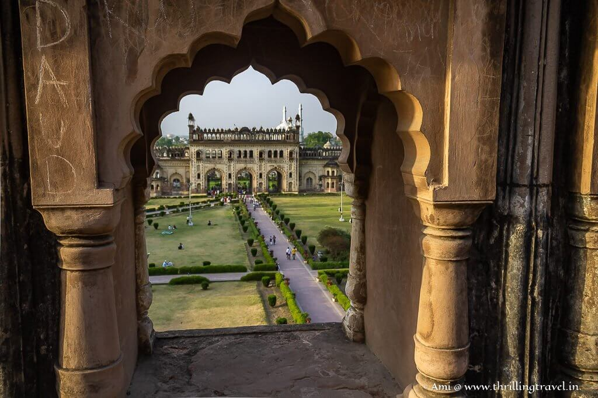

A Symphony of Styles
Bara Imambara's design is a magnificent fusion of Mughal, Persian, and Awadhi architectural styles. This eclectic blend is a testament to the diverse influences prevalent during its construction and gives the landmark its unique visual identity.
Key elements include its distinctive large arched vaults and the labyrinthine Bhul Bhulaiya, and the masterful use of lime plaster and bricks instead of wood or iron, which contributes to the building’s unique strength and durability.

Windows Structure of Bara Imambara.